Honu Watch guide
Your watch updates itself over Wi-Fi — no cable and no computer. It takes a few minutes. The first time also includes a one-time Wi-Fi setup, using your phone.
Wi-Fi that asks you to sign in on a web page (hotels, cafes, airports) won't work.
The watch has two buttons on its side. The upper button (nearer the top of the screen) puts the watch to sleep; the lower button (nearer the bottom of the screen) wakes it up.
To begin, tap Stop at the top right of the main screen, or press the upper button. (The first screen, “Tap when in putting position”, has no Stop button — use the upper button there.)
The watch says Bye. For about three seconds an Update button appears below it — tap it.
When you tap it, the button turns green and says Starting…. The watch then restarts into update mode, which takes a few seconds.
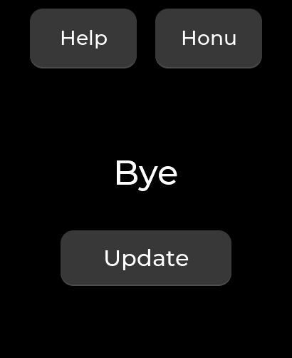
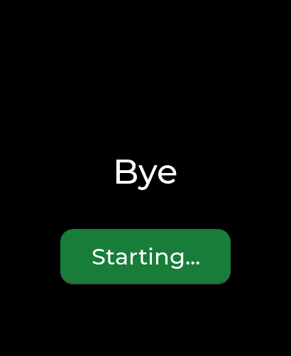
Missed it? Nothing is wrong — the watch simply goes to sleep. Press the lower button to wake it and try once more.
First time only
The watch shows a square barcode (a QR code). It is a one-time key to a temporary Wi-Fi network that the watch creates, so your phone can pass your home Wi-Fi details to it.
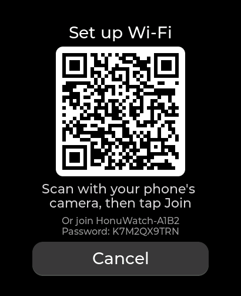
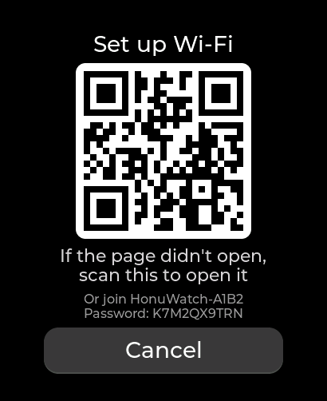
The little text under the barcode gives the temporary network's name and password, in case you would rather join it by hand and then go to 192.168.4.1 in your phone's browser.
Wrong password? The watch tells you, and shows a fresh barcode. Scan it again and re-enter the password — Wi-Fi passwords are case-sensitive.
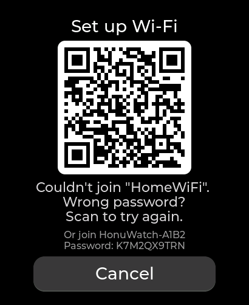
The setup gives up after 10 minutes if nothing happens. Choose Try again (or start over from step 1).
The watch joins your Wi-Fi and asks the update page whether there is a newer version. This takes a few seconds; the dots move while it works.
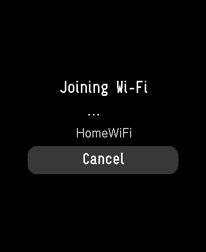
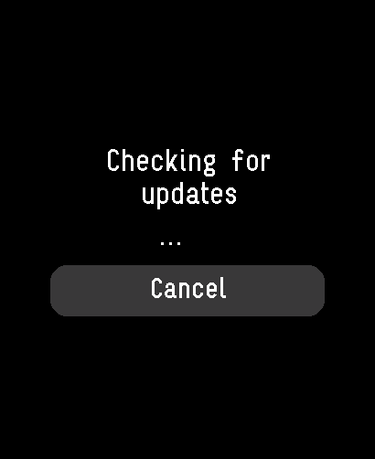
If a newer version exists, the watch shows Update available, with the new version number and what you have now. Tap Install.
If you're already current it says You're up to date — tap Done and you're finished.
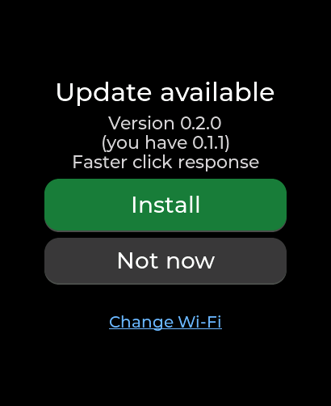
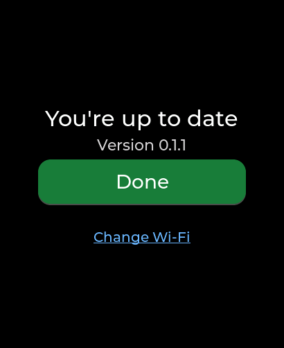
Install is greyed out and the screen says the battery is low? Plug in a charger, or let the battery reach 40%, and it becomes available.
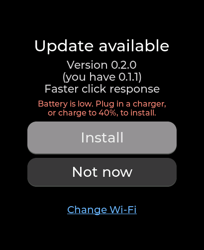
Not now takes you back to the putting app without installing anything.
A bar shows the download. It usually takes a minute or two. Keep the watch on until it restarts by itself — it does that as soon as the update is installed.
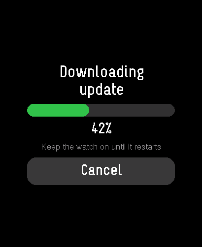
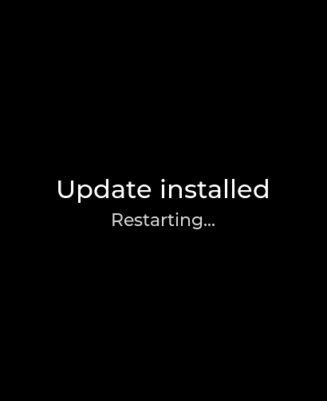
The watch comes back to the first screen. The version number is in the lower right — check that it's the new one.
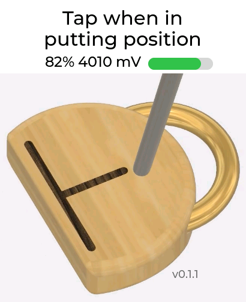
The watch remembers your Wi-Fi, so step 2 is skipped: tap Update and it joins by itself. Away from home, or if you change your router, it simply shows the setup barcode again. You can also pick another network at any time with Change Wi-Fi, shown on the result screens.
Nothing is ever lost. You can stop at any moment with Cancel (or the upper button) and the watch goes back to the putting app. Your current version is only replaced once the new one has been fully downloaded and checked, and if a new version doesn't start properly the watch automatically returns to the previous one.
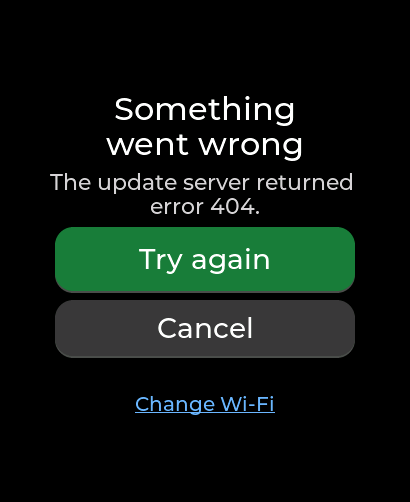
The message under the heading says what happened. Tap Try again first — most problems are momentary. If it keeps happening:
Look at the watch: once your phone has joined the watch's network, the screen changes to a second barcode — scan it. Or open your phone's web browser and type 192.168.4.1.
The watch only sees 2.4 GHz networks, so a 5 GHz-only network won't appear — look for the same router's other name. Move closer to the router. If your network is hidden, choose Other / hidden network at the bottom of the list and type its exact name.
Hold the phone steady about 15–25 cm (6–10 inches) from the watch and avoid glare on the screen. Or join by hand: in your phone's Wi-Fi settings choose the network named on the watch (it starts with HonuWatch-) and type the password shown under the barcode, then go to 192.168.4.1 in the browser.
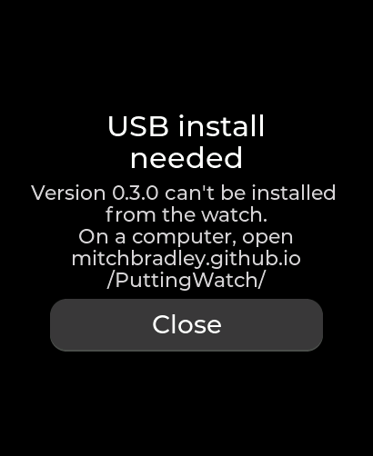
Very occasionally an update changes something that can't be installed over Wi-Fi. On a computer with Chrome or Edge, open the address the watch shows, plug the watch in with its USB-C cable, click Connect, choose the watch, and then Install Honu Watch. Keep the cable connected until it says it has finished.
Press the upper button: it cancels the update and returns to the putting app at any point. If the watch still doesn't respond, press the upper button to put it to sleep, wake it with the lower button, and start again from step 1.
The watch only downloads updates from the official Honu Watch page, over a secure connection whose identity it checks, and it verifies every download before installing it. Your Wi-Fi password is stored only on the watch.